Murayama
Murayama · Yamagata
Murayama
Highlighted on the Yamagata map.
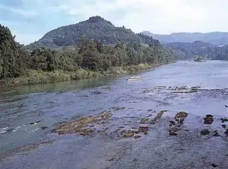
Stay
村山西口ホテル
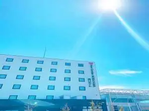
Murayama Nishiguchi Hoteru
Hotel in Murayama, Yamagata.
Dining
ひつじや
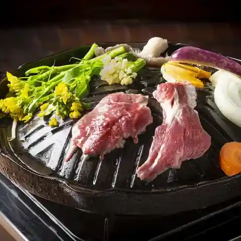
Hitsujiya
Jingisukan (lamb BBQ) restaurant in Murayama, Yamagata.
あらきそば
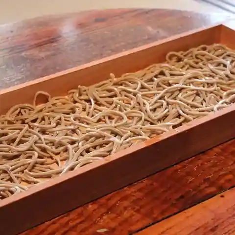
Arakisoba
Soba restaurant in Murayama, Yamagata.
ラーメン405
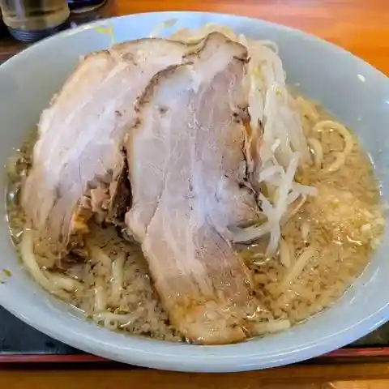
Raamen 405
Ramen shop in Murayama, Yamagata.
おんどりそば
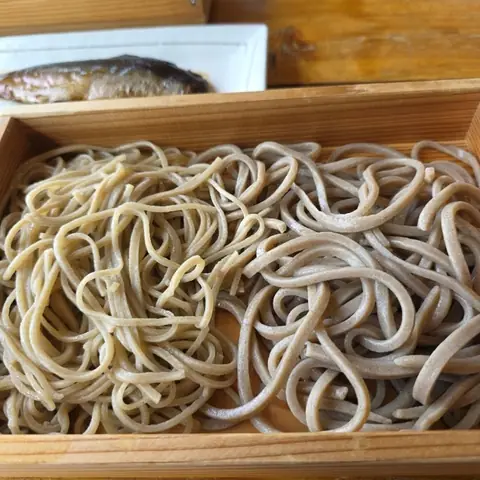
Ondorisoba
Soba restaurant in Murayama, Yamagata.
オクヤマ食堂
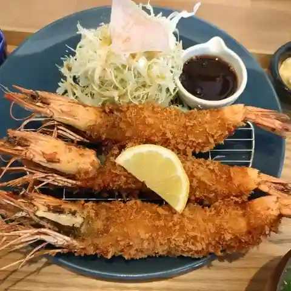
Okuyama Shokudou
Shokudo diner in Murayama, Yamagata.
食堂 もちやかた
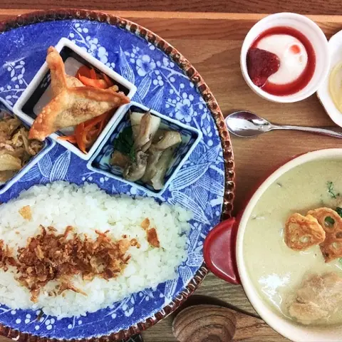
Shokudou Mochiyakata
Japanese restaurant in Murayama, Yamagata.
すしの市場大漁
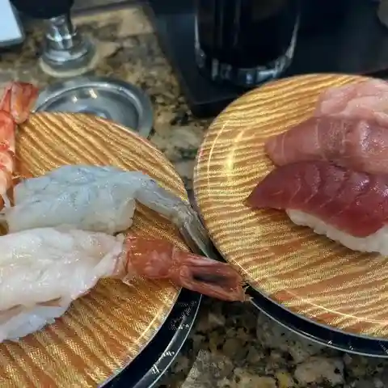
Sushino Shijou Tairyou
Sushi restaurant in Murayama, Yamagata.
じゅんさい
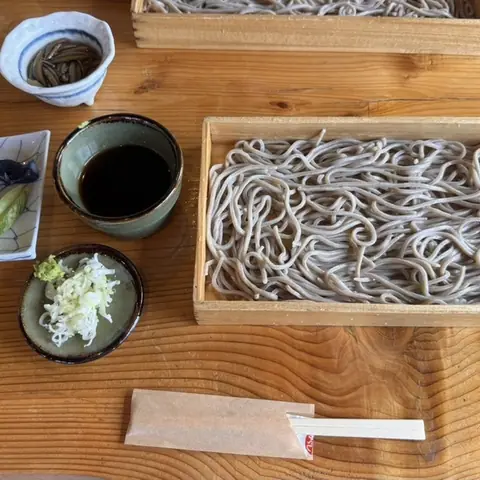
Junsai
Soba restaurant in Murayama, Yamagata.
手打ち塾 瀧田
Teuchi Chi Juku Takita
Soba restaurant in Murayama, Yamagata.
そば処 甑
Soba Tokoro Koshiki
Soba restaurant in Murayama, Yamagata.
ゆきむろ
Yukimuro
Soba restaurant in Murayama, Yamagata.
道の駅 むらやま
Michi No Eki Murayama
Roadside-station eatery in Murayama, Yamagata.
愛亭
Ai Tei
Udon restaurant in Murayama, Yamagata.
バラ亭
Bara Tei
Soba restaurant in Murayama, Yamagata.
三郎兵衛そば
Saburobee Soba
Soba restaurant in Murayama, Yamagata.
お食事の店 満月
O Shokuji No Mise Mangetsu
Japanese restaurant in Murayama, Yamagata.
そばやかた 樽石
Sobayakata Taru Ishi
Soba restaurant in Murayama, Yamagata.
大正堂
Taishou Dou
Ramen shop in Murayama, Yamagata.
善兵衛
Zenbee
Soba restaurant in Murayama, Yamagata.
山形麺屋 殿
Yamagata Men Ya Dono
Ramen shop in Murayama, Yamagata.
Dolce
Dolce
Café in Murayama, Yamagata.
いろは 平野店
Iroha Heiya Mise
Soba restaurant in Murayama, Yamagata.
チャコール バル テソロ
Chakooru Baru Tesoro
Italian restaurant in Murayama, Yamagata.
Sights
Higashizawa Rose Park
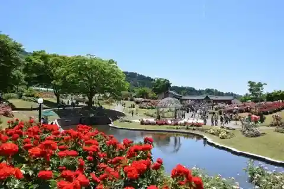
Beyond the entrance, beds of colourful roses bloom across the park: about 20,000 rose bushes. The Rose Exchange Hall sells a popular rose soft-serve ice cream.
Michi-no-Eki Murayama
A roadside station in Murayama, at the centre of Yamagata Prefecture, with parking on both sides of the road linked by a footbridge. It stocks Yamagata sake, sweets and specialities, and a farm stand sells seasonal produce.
Hayashizaki Iai Shrine
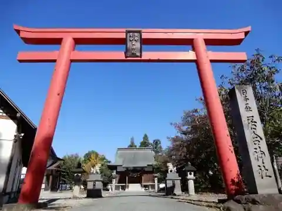
The only shrine in Japan dedicated to iai, enshrining Hayashizaki Jinsuke Shigenobu, founder of iaido. Each September practitioners of many schools give demonstrations, and visitors can join an iaido experience programme.